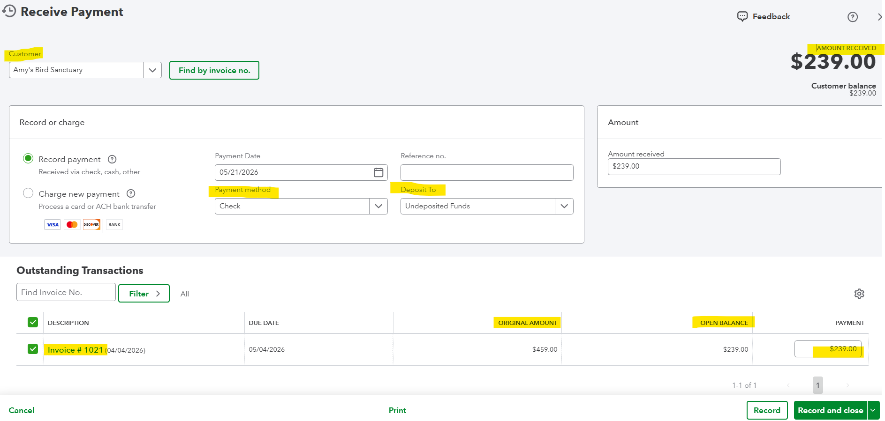

Purpose
Record customer payments and apply them to the correct open invoices.
Simple Example
A $239 payment from Amy’s Bird Sanctuary is applied to Invoice #1021 and deposited to Undeposited Funds.
Simple Bookkeeping Decision Rule
Always apply a payment to the correct customer and invoice. If the money will be grouped with other payments before going to the bank, use Undeposited Funds.

Analysis
I reviewed the Receive Payment screen for Amy’s Bird Sanctuary. The screenshot shows an amount received of $239.00, payment date 05/21/2026, payment method Check, and deposit location Undeposited Funds. The payment is applied to Invoice #1021, which originally had $459.00 and now shows an open balance of $239.00 being paid.
Result
The customer payment can be recorded and applied to the correct invoice. This reduces the customer balance and prepares the payment for bank deposit.